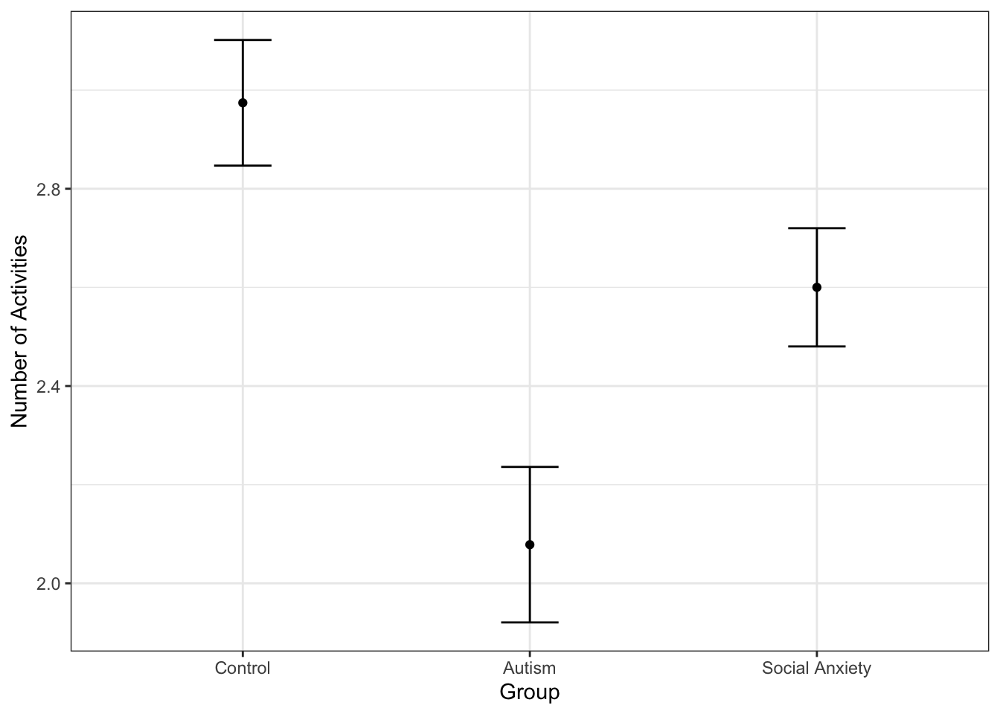
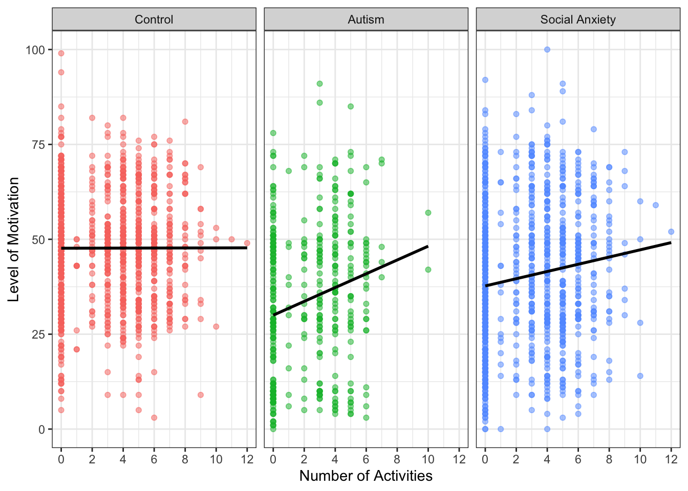
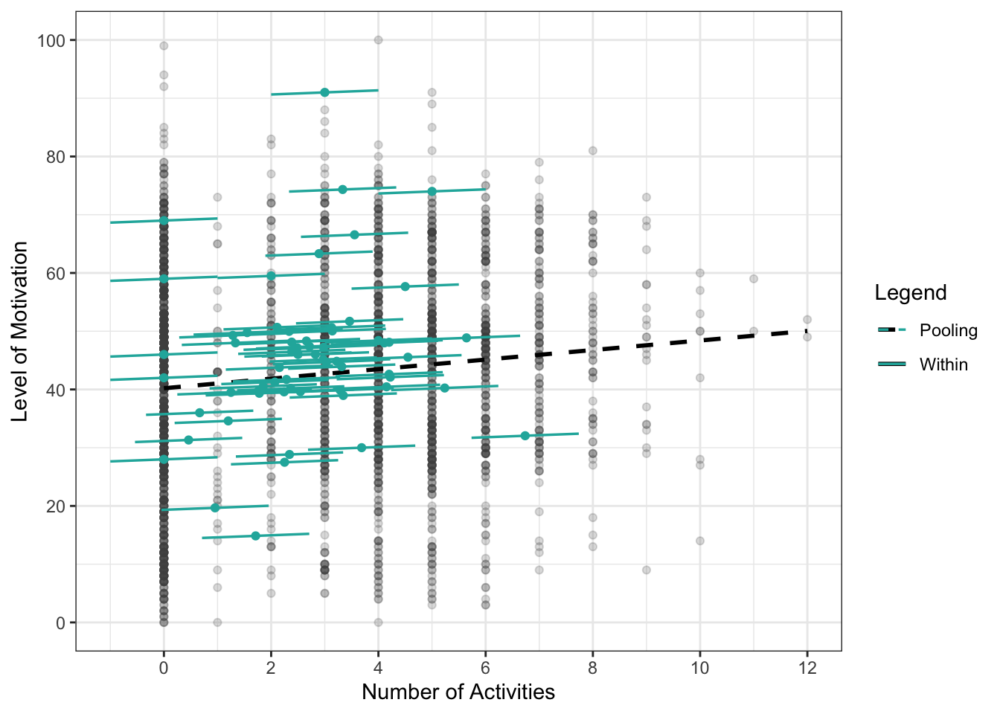
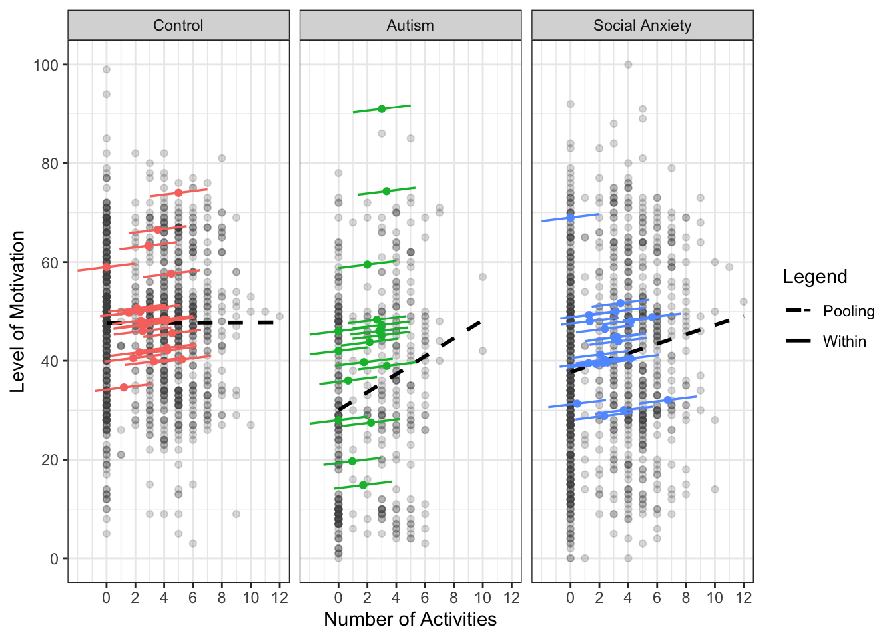

| Mean | Std. Dev. | Mean | Std. Dev. | Mean | Std. Dev. | |
|---|---|---|---|---|---|---|
| No. of Activities | 3.0 | 2.7 | 2.1 | 2.3 | 2.6 | 2.7 |
| Sev-Day No. of Acts. | 3.0 | 1.7 | 2.0 | 1.4 | 2.6 | 1.7 |
4 Results and Discussions
Keywords
travel behavior, mental health, motivation, suicidality, activity types, DBSCAN-TE
Analyzing travel behavior and mental well-being requires a comprehensive examination of the individual’s group. It is important to look at various factors related to how these groups travel and how their travel affects their well-being. Understanding the number and type of activities they engage in, motivational levels, and propensity towards suicidal ideation provides valuable insights for this analysis.
4.1 Activity Engagement by Group
This analysis examined the activity engagement patterns of the three groups: control, autism, and social anxiety. We analyzed the total number of activities and the seven-day rolling average number of activities for individuals in these groups. The descriptive statistics in Table 4.1 describe these results for each group.
Individuals in the control group engaged in an average of 3.0 activities, while the autism group averaged 2.1, and the social anxiety group averaged 2.6 activities. Standard deviations for the groups ranged from 2.3 to 2.7. A seven-day rolling average of activities showed similar trends but with slightly lower variability.
An ANOVA test revealed significant differences in the mean number of activities between the groups, with an F value of 32.97 and a p-value less than 0.001, indicating that the variation across groups was statistically significant. Figure 4.1 displays the mean activities and 95% confidence intervals for group differences.

After finding significant differences in activity levels among the three groups, a Tukey’s Honest Significant Difference (HSD) test identified specific group differences. Individuals in the autism group participated in significantly fewer activities than the control group, with a mean difference of -0.896 (p < 0.001), and compared to the social anxiety group, with a mean difference of -0.375 (p < 0.001). Similarly, the social anxiety group engaged in fewer activities than the control group, with a mean difference of -0.521 (p < 0.001).
These results show significant differences in activity engagement across groups, with individuals with autism and social anxiety participating less than those in the control group. This underscores the importance of considering group differences when analyzing activity patterns and mental health outcomes.
4.2 Motivation by Group
We observed notable differences in well-being among the groups. Based on existing literature, we expected that individuals in the autism and social anxiety groups would report lower well-being compared to the control group. Using motivation as an indicator of well-being, we analyzed motivation levels from the evening survey, rated on a 1-100 scale. Table 4.2 presents the mean and standard deviation of motivation for each group.
| Mean | Std. Dev. | Mean | Std. Dev. | Mean | Std. Dev. | |
|---|---|---|---|---|---|---|
| Motivation | 47.7 | 14.2 | 34.0 | 19.4 | 40.3 | 18.5 |
The findings revealed differences in motivation across the groups. The control group had the highest mean motivation score of 47.7, with the lowest variability (standard deviation of 14.2), falling slightly below the middle range of the “typical motivation” category. The autism group had the lowest mean score of 34.0, with the highest variability (standard deviation of 19.4), falling in the “enough motivation to get by” category. The social anxiety group had a mean score of 40.3, falling between the other two groups and on the lowest end of the “typical motivation” category. An ANOVA test confirmed significant differences in motivation levels among the groups, with an F value of 362 and a p-value less than 0.001, indicating that these differences are statistically significant.
After confirming significant differences in motivation levels among the three groups, a Tukey’s HSD test was conducted to identify specific group differences. The autism group had a significantly lower mean motivation level than the control group, with a difference of -9.99 points. The social anxiety group also had a significantly lower motivation level compared to the control group, with a difference of -7.74 points. When comparing the autism and social anxiety groups, the social anxiety group had a significantly higher motivation level by 2.25 points. All differences had p-values less than 0.001.
These results highlight significant differences in motivation levels, with the control group showing higher motivation than both the autism and social anxiety groups, and the social anxiety group showing higher motivation than the autism group. This pattern underscores the impact that the group has on an individual’s motivation.
4.3 Suicidal Ideation by Group
The morning and evening surveys included different questions pertaining to suicidal ideation. The dataset presents an insightful glimpse into the prevalence of suicidal ideation within the groups, shedding light on potential differences in mental health concerns among them. We examined responses to the question “Have you thought about killing yourself in the past 12 hours or since you last took a survey?” across the three groups, where responses were “Yes,” “No,” or “No Response.” The responses to this question are summarized by group in Table 4.3.
| N | Pct. | N | Pct. | N | Pct. | ||
|---|---|---|---|---|---|---|---|
| Suicidal Ideation | Yes | 36 | 2.1 | 39 | 4.9 | 296 | 15.6 |
| No | 1133 | 66.4 | 415 | 51.6 | 737 | 38.9 | |
| No Response | 537 | 31.5 | 350 | 43.5 | 860 | 45.4 |
In the control group, participants reported no suicidal ideation on 66.4% of days and acknowledged suicidal thoughts on 2.1% of days. In the autism group, 51.6% of days were reported as ideation-free, while 4.9% of days involved suicidal ideation. The social anxiety group showed a different pattern, with no ideation reported on only 38.9% of days and ideation present on 15.6% of days. Some respondents across all groups chose not to answer, indicating the sensitive nature of the question.
A contingency table was constructed to organize the responses (“Yes,” “No,” or “No Response”) by group, and a chi-square test of independence was performed. The test yielded a chi-square statistic of 388.06 with 4 degrees of freedom, and a p-value less than 0.001, indicating a significant association between group and suicidal ideation responses. This suggests that grouptypology influences the likelihood of reporting suicidal ideation, highlighting differences in how individuals from each group experience suicidal thoughts.
4.4 Model Comparison and Evaluation
As discussed previously, we ran three different models to analyze the effect of the seven-day rolling average number of activities on motivation levels. We ran the OLS, FE, and RE models with robust standard errors and t-statistics due to the potential for autocorrelation and heteroskedasticity. The results of these three models are shown in Table 4.4.
| OLS | FE | RE | |
|---|---|---|---|
| Sev-Day No. of Acts. | 1.420*** | 0.287+ | 0.362* |
| (9.057) | (1.691) | (2.174) | |
| No. of Obs. | 4,211 | 4,211 | 4,211 |
| AIC | 35,969.8 | 34,519.76 | 34,596.1 |
| R² | 0.021 | 0.001 | 0.047 |
| Robust t-statistics in parentheses. + p < 0.1, * p < 0.05, ** p < 0.01, *** p < 0.001 |
We used the Hausman test to compare the RE and FE models. The test checks whether the RE model estimates are consistent and efficient compared to the FE estimates. The null hypothesis assumes RE estimates are consistent and efficient, while the alternative supports the FE model. With a p-value of 0.0013 (less than 0.05), we reject the null hypothesis, indicating that the RE model is inconsistent. Therefore, the FE model is more appropriate and was used for the remainder of the analysis.
4.5 Effect of Demographic Factors on Motivation
Given the Hausman test results, we used the FE model for analyzing activity patterns and mental health data. A limitation of the FE model is its inability to account for time-constant variables. To address this, we performed a linear regression to assess how demographic factors (e.g., sex, age, IQ score, and group) are associated with the intercepts from the FE model. This linear regression is described generally in Equation 4.1
\[ \bar{y}_{i} \; \tilde{} \; \beta (\vec{X}_{it}) \tag{4.1}\]
This allows us to understand how the baseline levels of motivation differ across groups. The sex, age, IQ score, and group were the independent variables, and the FE intercept values for each userID served as the dependent variable. The results from this model are shown in Table 4.5.
| Intercept Model | |
|---|---|
| Female | −6.351 (−2.265)* |
| Age | 0.089 (0.192) |
| IQ Score | −0.058 (−0.617) |
| Autism | −10.247 (−3.139)** |
| Social Anxiety | −8.544 (−3.164)** |
| No. of Obs. | 62 |
| Log. Liklihood | −222.022 |
| AIC | 458.044 |
| R² | 0.264 |
| t-statistics in parentheses. + p < 0.1, * p < 0.05, ** p < 0.01, *** p < 0.001 |
The analysis revealed significant findings regarding motivation levels. Being female was associated with a decrease of 6.351 points in motivation compared to males, with a statistically significant p-value less than 0.05. Age and IQ score did not show significant associations. In contrast, individuals with autism had a substantial decrease in motivation of 10.247 points compared to the control group, while those with social anxiety experienced an 8.544 point decrease, both with p-values less than 0.01. These results indicate that sex and group status significantly influence motivation levels, while age and IQ score have limited impact. The model explained approximately 26.4% of the variance in motivation, suggesting that other factors may also contribute. Overall, these findings highlight the importance of considering individual differences, particularly sex and group status, in examining motivation, with a focus on group typology for further exploration.
4.6 Models by Group
After identifying statistical differences in mean motivation, number of activities, and suicidal tendencies across the three groups, we opted to model each group separately. This approach aims to capture the unique characteristics and behaviors within each group, potentially revealing more nuanced relationships between variables and outcomes. Given the need for a FE model to account for individual differences, this method ensures that both observed and unobserved participant characteristics are considered in the analysis. Moving forward, we will employ FE models for each group, allowing us to explore factors influencing motivation while accounting for the distinct attributes of each subgroup.
4.6.1 Motivation and Number of Activities
To visualize the need to look at each group separately and each individually separately, we plotted the number of activities and levels of motivation for all individuals within each group. Figure 4.2 shows the relationship between motivation and the number of activities by group before taking into account the FE.

This analysis revealed that, without accounting for FE, there is no significant relationship between the number of activities and motivation in the control group. However, for the autism group, a steep slope indicates that as the number of activities increases, so does motivation. The social anxiety group also shows a positive slope, though less pronounced, suggesting a correlation between increased activities and higher motivation levels. These findings contradict existing literature, which support that motivation in the autism and social anxiety groups should not necessarily rise with more activities, underscoring the importance of using the FE model.
Figure 4.3 presents plots illustrating the influence of activities on motivation. The dashed pooling line represents the intercept and slope if all data were analyzed together, while the solid lines show individual lines of best fit for each participant. This means each individual has a different intercept, but all share the same slope.

While modeling each participant individually is crucial for accounting for varying baseline levels of motivation, we found that applying a FE model to each group—control, autism, and social anxiety—was also important for understanding the true relationship between the number of activities and motivation, as each group may have different baseline levels.
Figure 4.4 presents the results of the FE models for all three groups. These models predict motivation based on the number of activities while considering both individual and group baseline differences. This approach allows for a more accurate assessment of the impact of activities on motivation within each distinct group. The plots illustrate unique patterns for each group, emphasizing the value of tailored analyses. Notably, the autism and social anxiety groups show steeper slopes when all data are pooled together; however, when individuals are analyzed separately, the slopes for each group are much less steep. These results align more closely with expectations from existing literature.

Since the FE models require both an evening survey response for motivation and the number of activities determined by the DBSCAN-TE algorithm, some data were lost. This reduced the sample size from 31 to 23 in the control group, from 29 to 17 in the autism group, and from 28 to 22 in the social anxiety group. The FE models need enough data points for each participant to ensure effective analysis, which explains the reduction in participants. After visualizing the relationships, we proceeded with running the FE models for each group. The results from these models are presented in Table 4.6.
| Group: Control | Group: Autism | Group: Social Anxiety | |
|---|---|---|---|
| No. of Activities | 0.259+ | 0.361 | 0.483* |
| (1.716) | (1.147) | (2.149) | |
| No. of Obs. | 1,167 | 451 | 1,033 |
| AIC | 9,177.454 | 3,597.049 | 8,797.231 |
| R² | 0.003 | 0.003 | 0.004 |
| Robust t-statistics in parentheses. + p < 0.1, * p < 0.05, ** p < 0.01, *** p < 0.001 |
The FE models for the control, autism, and social anxiety groups revealed different relationships between the number of activities and motivation. For the control group, the coefficient was 0.259, suggesting a marginally positive but not strongly significant relationship. In the autism group, the coefficient was 0.361, also indicating a positive but statistically insignificant relationship between activities and motivation. However, the social anxiety group had a coefficient of 0.483, showing a statistically significant positive relationship. This suggests that increasing activities is notably linked to higher motivation for individuals with social anxiety.
These findings underscore the importance of recognizing individual differences across groups. The significant positive relationship in the social anxiety group suggests that increasing activities could be particularly effective in enhancing motivation for this population. In contrast, the control and autism groups did not show strong evidence of this relationship, indicating that other factors might play a more critical role in influencing motivation for these groups.
4.6.2 Motivation and Suicidal Ideation
The prevalence of suicidal ideation across the groups underscores the complex interplay between mental health and activity engagement. The literature suggests that suicidal behavior is negatively associated with overall well-being (Fonseca-Pedrero et al., 2022; Fumero et al., 2021). Since we connected motivation to well-being, a similar association is drawn between suicidal tendency and motivation.
Based on similar conclusions from the motivation and number of activities analysis, we continued to perform the analysis by group. Table 4.7 shows the FE models for the impact of suicidal intensity, which was scored from 1-100, on level of motivation, which was also scored from 1-100, for individuals by group.
| Group: Autism | Group: Social Anxiety | Group: Control | |
|---|---|---|---|
| Suicidal Intesity | −0.095+ | −0.160*** | −0.361** |
| (−1.927) | (−5.518) | (−3.293) | |
| No. of Obs. | 484 | 822 | 66 |
| AIC | 3,942.104 | 6,934.607 | 568.685 |
| R² | 0.012 | 0.04 | 0.113 |
| Robust t-statistics in parentheses. + p < 0.1, * p < 0.05, ** p < 0.01, *** p < 0.001 |
The FE models for the autism, social anxiety, and control groups show distinct relationships between suicidal intensity and motivation levels. In the autism group, the coefficient for suicidal intensity is -0.095, indicating a marginally significant negative relationship, suggesting that higher suicidal intensity may slightly reduce motivation, though the evidence is weak. In contrast, the social anxiety group shows a coefficient of -0.160, with a statistically significant negative relationship, meaning higher suicidal intensity is strongly linked to decreased motivation. Similarly, the control group’s coefficient is -0.361, with a significant negative relationship, showing that increased suicidal intensity is associated with notably lower motivation levels.
These findings emphasize the need to consider the impact of suicidal intensity on motivation within each group. While the relationship is negative across all groups, the varying strength and significance highlight the necessity for tailored interventions to address motivational challenges in each population.
4.7 Activity Types
We examined how the number of activities at different locations—such as parks, grocery stores, libraries, and social recreation spaces—impacts motivation across each group. The analysis factored in activity counts determined by the DBSCAN-TE algorithm, along with seven-day and 14-day moving averages. While all activity locations and measurements were included, only a few yielded statistically significant results. Notably, significant findings emerged for the seven-day average park activities and daily grocery store activities, highlighting their potential influence on individual motivation levels.
4.7.1 Activities at Parks
Table 4.8 presents the FE models for the seven-day rolling average number of activities at parks for the three groups.
| Group: Control | Group: Autism | Group: Social Anxiety | |
|---|---|---|---|
| Seven-Day Park | 3.017* | 4.938 | 1.511 |
| (2.239) | (0.857) | (0.207) | |
| No. of Obs. | 1,840 | 774 | 1,597 |
| AIC | 14,509.34 | 6,215.856 | 13,615.11 |
| R² | 0.002 | 0.001 | 0 |
| Robust t-statistics in parentheses. + p < 0.1, * p < 0.05, ** p < 0.01, *** p < 0.001 |
In examining park activities, statistically significant results were observed solely for the control group. A positive correlation emerged, indicating that each additional park activity within a seven-day period corresponded with a 3.017-point increase in motivation score. This suggests that frequent park visits over a week are linked to heightened motivation levels among individuals in the control group. Conversely, the analysis did not unveil any significant correlation between park visits and motivation levels for the autism and social anxiety groups. This implies that park activities within the examined time frames do not notably affect motivation levels for these groups.
4.7.2 Activities at Grocery Stores
Table 4.9 presents the FE models for the number of activities at grocery stores for the three groups.
| Group: Control | Group: Autism | Group: Social Anxiety | |
|---|---|---|---|
| Grocery Store | −2.690+ | −2.725*** | 0.519 |
| (−1.878) | (−3.721) | (0.614) | |
| No. of Obs. | 1,167 | 451 | 1,033 |
| AIC | 9,178.666 | 3,598.227 | 8,801.453 |
| R² | 0.002 | 0.001 | 0 |
| Robust t-statistics in parentheses. + p < 0.1, * p < 0.05, ** p < 0.01, *** p < 0.001 |
The examination of grocery store visits unveiled intriguing trends across the different groups. Notably, a statistically significant negative correlation was found for the autism group, indicating a decrease in motivation by 2.725 points with each additional grocery store activity (p < 0.001). Similarly, the control group exhibited a slight negative correlation (p < 0.1), with each additional daily extra grocery store visit reducing motivation by 2.690 points. Conversely, no statistical significance was observed for the social anxiety group. These findings underscore a nuanced connection between grocery store visits and motivation, with notable negative impacts identified in the autism group, while no significant associations were evident in the control and social anxiety groups.
4.7.3 Activity Impact on Motivation
These findings are important because they reveal how activities impact mental well-being differently for individuals with autism, social anxiety, and those without these conditions. For the control group, the positive correlation with seven-day average park visits suggests outdoor activities benefit overall well-being. Conversely, the negative correlation with grocery store visits for the autism group highlights the stress linked to routine tasks like grocery shopping. Understanding these differences is key to designing tailored interventions. For example, promoting park visits could boost well-being in the general population, while reducing stress in grocery environments could aid autistic individuals. The lack of significant results for specific locations in the social anxiety group suggests that overall activity levels, rather than specific locations, may be more crucial to their well-being.